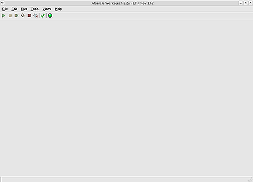
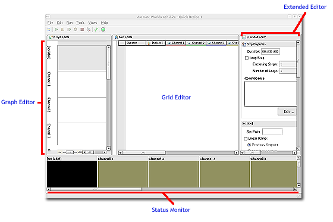
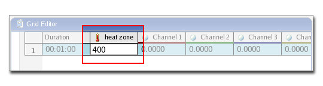
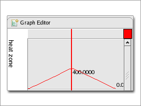
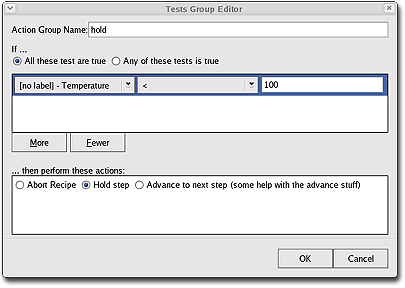
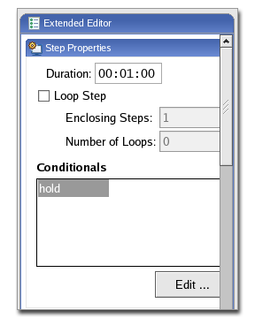

This is a brief tutorial to help you get started with the workbench.
Log into the system with your username and password. If this is your first time, log in with the username "atomate" and the password "atomate".
Double-click the icon labeled "Atomate Workbench" to start the program.
When the program starts, you will see a single blank window with a menu bar and an inactive toolbar.
Open the File menu and select New Recipe (or File > New Recipe). You may also use the shortcut key <Ctrl+N>. A "New Recipe" window appears. This dialog lets you specify information about the new recipe. You must give the recipe a name, or you will not be able to proceed. Enter the name "Quick Recipe" and the same for the description. Checking default devices will create a recipe that contains columns for all the devices included with your system. Choose default devices and click OK.
The dialog will disappear and you will be returned to the main window. The name of the recipe now appears on the title bar: "Atomate Workbench v2.2 - Quick Recipe - 1" where Quick Recipe is the name of the recipe and 1 indicates the version number.
The main window, or Edit Perspective, now contains two sections: "Schematics Panel" and "Graph Editor". The Schematics Panel has three parts: "Status Monitor" with LED display, "Grid Editor" which looks like a spreadsheet, and "Extended Editor".
There are 2 different perspectives contained in the Workbench program, the Edit Perspective that appears while creating and editing a recipe and the Run Perspective that is accessed when the recipe is running. A perspective is the set of panels that completely takes over the main window. There can be only one perspective active at a time, therefore when the Run Perspective is active then the Edit Perspective is not and vice versa.
Atomate has pre-configured each Workbench program specifically to each system. These settings include all devices associated with the system and can be accessed by checking "default devices" when creating a recipe. This will create a recipe containing columns for each piece of hardware (a column corresponding to the heating element, another column corresponding to gas flow channel 1, etc.).
Select Edit > Insert Steps or press <Ctrl+I>. This adds a new row to the recipe. The duration for the step is set at the default value of one minute, the default value for all device columns is zero.
The grid editor is like a spreadsheet. Each row represents a step in the recipe. The first cell of each row specifies the duration of time set for that step. The subsequent cells in that row represent values the corresponding devices will take on during that step. For a device such as a furnace or heating zone, this value represents the temperature setpoint that should be reached within the specified time period, and for mass flow control (MFC) channels the value represents the flow rate for that MFC channel.
Editing the values of the cells in the Grid Editor and navigating through the cells works the same as in most spreadsheet programs: use the arrow keys to move to adjacent cells, and while in a cell, press the spacebar or double click it to edit its value.
Double click on the cell in the "Heating Zone" column and type "400". Press <Enter> to accept the value.
Notice that the graph editor registers this value.
The Extended Editor provides more specific control over each step. It is comprised of a series of panels. The first panel, "Step Properties", provides control over the duration, repetition of the currently selected steps, and conditional actions. The other panel provides specific information about its respective device.
To create a conditional for a given step, click Edit below the Conditional field. The window "Conditional Tests" appears. Click Add to create a conditional, the conditional editor "Test Group Editor" appears. Click More to add and create another test. Under "Action Group Name" type "hold". Choose "all these tests are true" then choose "<" and type 100. Click "hold step" option and click OK and OK in the subsequent window. The name "hold" appears in the Conditionals field.
The recipe step now has a conditional. This conditional states that if the furnace or heating device reaches temperature values less than 100 C, then that particular recipe step will be held, even if the time for that step has expired. (See User Guide, Extended Editor for more details).
To run the recipe, first make sure all devices are on and connected, then click the Run icon (green arrow), Run > Run or <F6>. The Workbench will switch from the Edit Perspective to the Run Perspective.
The Run perspective is divided into 3 panels containing the Run History, an LED panel reporting the device status and setpoint for each step, and a graphical progression for each device through out the run. When the run has finished, the purge may be enabled (if setpoints and durations have been specified for one or several of the MFC channels). Once the purge has completed, or at the end of a recipe that doesn't include a purge, all system devices are turned off and the recipe can be modified under the Edit Perspective by choosing "Close Window" in the upper right corner of the Run History panel. All run data for a recipe is saved and if that recipe is modified, a new version is created. (See Recipes, Management and Versions for more information).
 Figure 5-Run
Figure 5-Run